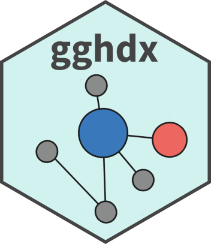
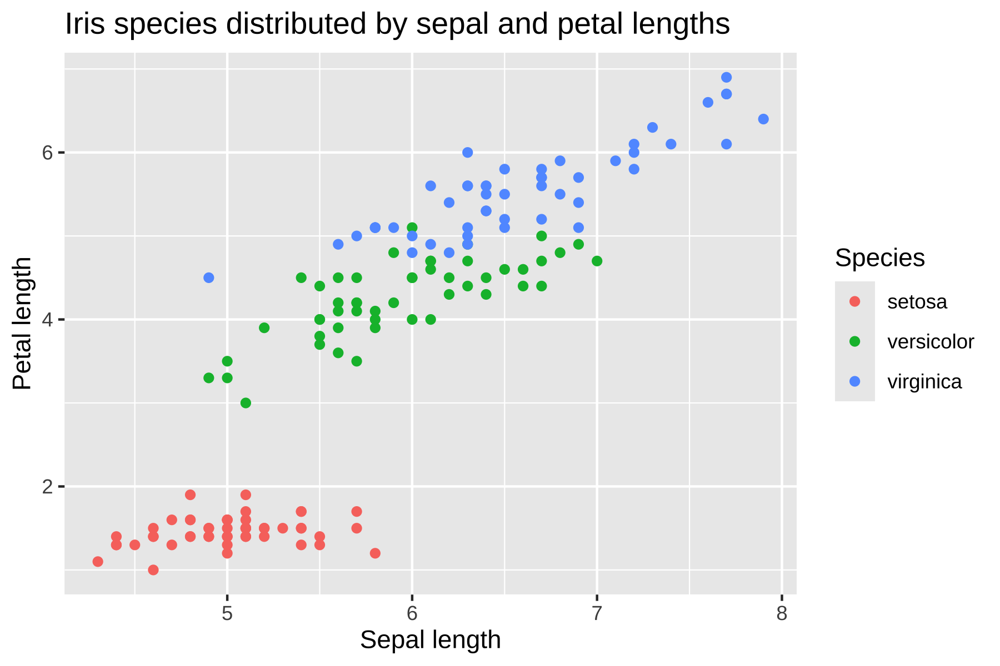
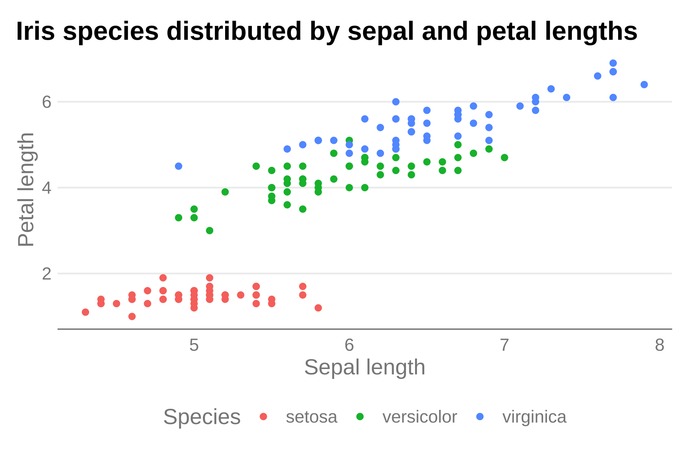
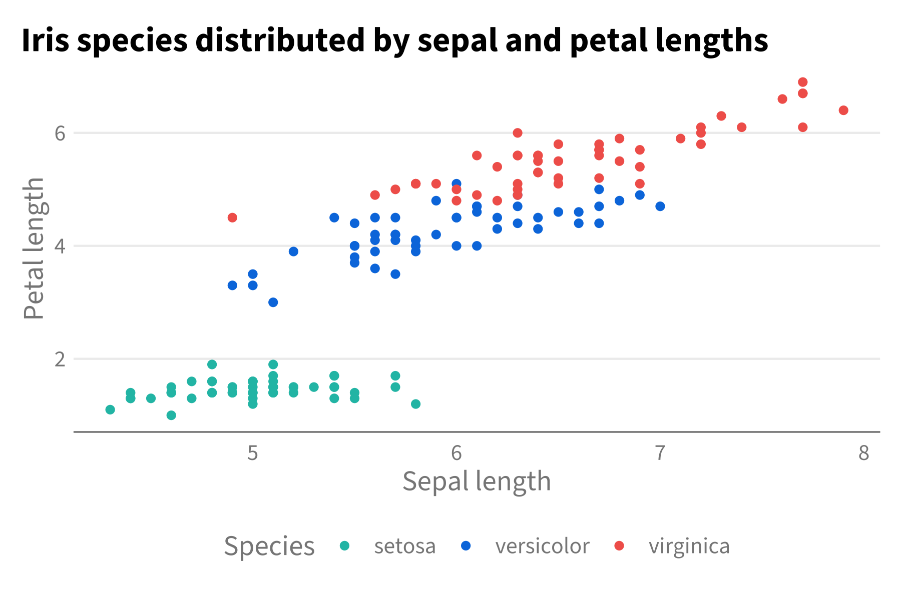
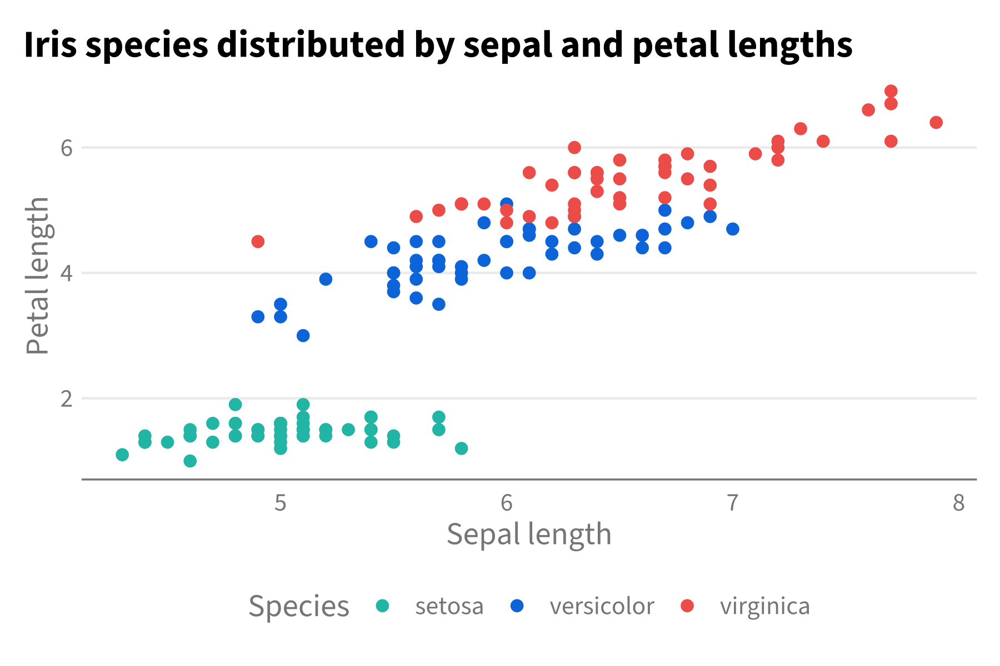
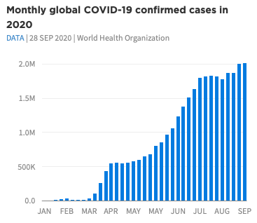
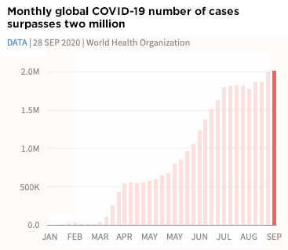
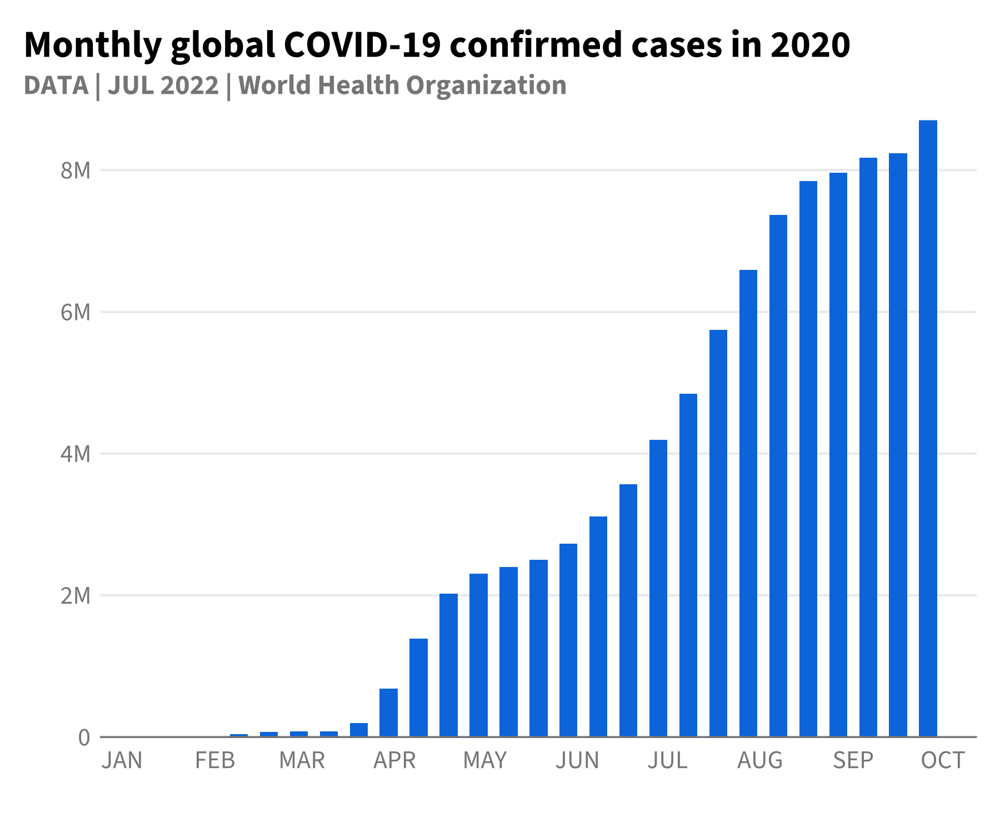
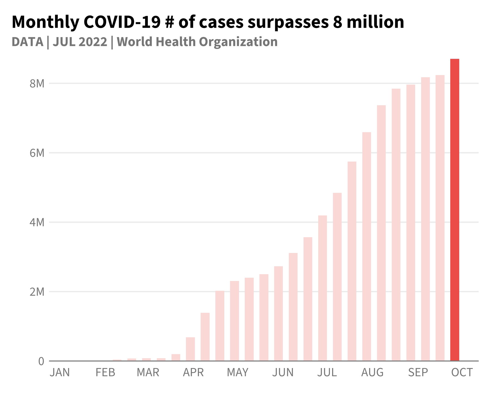

gghdx 
Overview
The goal of gghdx is to make it as simple as possible to follow the HDX visual guidelines when creating graphs using ggplot2. While most of the functionality is in allowing easy application of the HDX color ramps, the package also streamlines some of the other recommendations and best practices regarding plotted text, axis gridlines, and other visual features. The key functionalities are:
-
theme_hdx()is the general package theme. -
scale_color_hdx()andscale_fill_hdx()applies the HDX color scale to the relevant aesthetics. -
hdx_colors(),hdx_hex(), andhdx_pal()provide easy user access to the HDX color template. -
geom_text_hdx()andgeom_label_hdx()wrap the respective base functions to plot text using HDX fonts and aesthetics. -
scale_y_continuous_hdx()wrapsscale_y_continuous()to plot data directly starting from the y-axis. -
gghdx()ensures plot for the session use HDX defaults for color and fill scales, usestheme_hdx()for all plots, and appliesscale_color_hdx()andscale_fill_hdx()
Installation
You can install gghdx directly from GitHub:
## install.packages("remotes")
remotes::install_github("caldwellst/gghdx")The package is not currently available on CRAN. Since gghdx utilizes the showtext and sysfonts packages to cleanly import and use the Source Sans Pro font, it is recommended to install them as well. Simply just install showtext and sysfonts will also be installed.
install.packages("showtext")The package is designed so the user just has to run gghdx() once a session and mainly forget about it. This will automatically set your ggplot2 to use the HDX theme, palettes, fonts, and more by default. If you want more control or want to better understand how the package works, please see the details below!
Using the package
Theme
A quick and simple example would be plotting the iris dataset included in base R.
library(ggplot2)
p <- ggplot(
iris,
aes(
x = Sepal.Length,
y = Petal.Length,
color = Species
)
) +
geom_point() +
labs(
title = "Iris species distributed by sepal and petal lengths",
y = "Petal length",
x = "Sepal length"
)
p
This output using the base ggplot style doesn’t look particularly bad, but we can use theme_hdx() to quickly adjust some of the styling to fit the style guide.

Now, axis lines have been cleaned up and the plot better resembles recommendations from the visual guide with just that single line of code.
Color palettes
However, the color palette for the points is still using the base R palette. We can use one of the many scale_...hdx() functions to use HDX colors. Let’s just use the primary discrete color scale that will align each species with one of the 3 non-gray colorramps (sapphire, mint, and tomato).
p + theme_hdx() + scale_color_hdx()
You can check the documentation of any of the scale_...hdx() functions to see all available scales, or directly access the colors using hdx_colors() or the raw list in hdx_color_list.
Adding fonts
We also would like to use the HDX font family. Since Source Sans Pro is a free Google font, it makes it relatively easy to access in R. You can use the sysfonts package to load the Google font and then showtext to include them in our plot. You can also use the extrafont package as an alternative if you have the font installed locally. This requires ghostscript to be installed locally and can run into other issues, such as font names not being found.
Below, I use the showtext package because it’s simpler.
library(showtext)
#> Loading required package: sysfonts
#> Loading required package: showtextdb
font_add_google("Source Sans Pro")
showtext_auto()
p + theme_hdx() + scale_color_hdx()
Streamlined plotting
As clear above, even though we have an HDX theme function, we still have to separately call the scale function to adjust our colors. And we have to call these every time we make a new plot. So, to make life simpler, gghdx() is provided as a convenience function that sets ggplot to:
- automatically use the HDX theme by default;
- use default HDX sapphire for point and line colors and and HDX mint for fill when not an aesthetic;
- use
scale_fill_hdx()andscale_color_hdx()as the default discrete fill and color respectively; - use
scale_fill_gradient_hdx_mint()andscale_color_gradient_hdx_sapphire()as the default continuous fill and color; - loads the Source Sans Pro font from Google and activates its usage for the current session.
You just have to run gghdx() once a session, and then our plots will already be where we would like!
gghdx()
p
And voíla, we have our graph without specifying the theme or color scale.
COVID plots
As a final example, we can closely match the COVID plots referenced in the visual guide using the theme and color scales in the package.

The inbuilt data gghdx::df_covid has aggregated COVID data we can use to mirror this plot. To make the data start at the y-axis, we can use scale_y_continuous_hdx() which sets expand = c(0, 0) by default.
p_blue <- ggplot(
df_covid,
aes(
x = date,
y = cases_monthly
)
) +
geom_bar(
stat = "identity",
width = 6,
fill = hdx_hex("sapphire-hdx") # use sapphire for fill
) +
scale_y_continuous_hdx(
labels = scales::label_number(
accuracy = 1,
scale = 1 / 1000000,
suffix = "M"
)
) +
scale_x_date(
date_breaks = "1 month",
labels = function(x) toupper(strftime(x, "%b"))
) +
labs(
title = "Monthly global COVID-19 confirmed cases in 2020",
subtitle = "DATA | JUL 2022 | World Health Organization",
x = "",
y = ""
)
p_blue
# create red plot
p_blue +
geom_bar(
aes(
fill = flag
),
width = 6,
stat = "identity"
) +
scale_fill_hdx_tomato() +
theme(
legend.position = "none"
) +
labs(
title = "Monthly COVID-19 # of cases surpasses 8 million"
)
We’ve used relatively few lines of code to match fairly closely these examples plots!